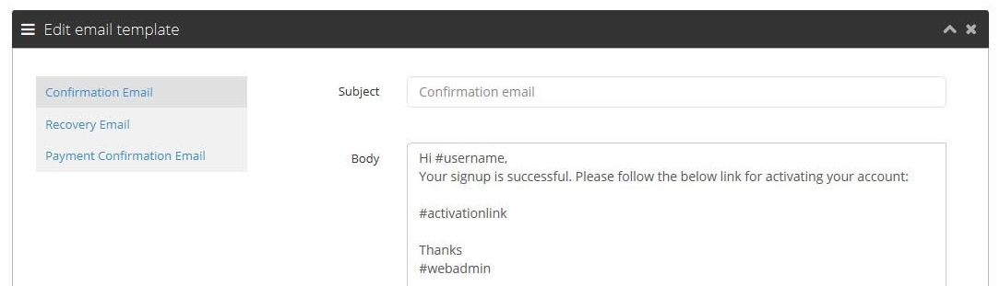

Gadivan
Buy Sell Car Marketplace Script
Latest Version 1.2 comes with improvement and upgrades.
- New config added to skip user email confirmation[NEW]
- Regular bug fixes[UPDATE]
Initial Version 1.1 comes with following features.
- Easy 2 step installation
- Responsive HD design with Bootstrap and Codeigniter PHP framework
- 3 types of banner(Parallax slider, Google map and layer slider)
- 2 types of search filter option(Basic options and Advance Options)
- Visitors can search by Category, Brand, Model, Mileage, City, State, Location radious and more...
- 3 types of view for results(Grid view, List view and Map view)
- Visitors can find car details and location from detail page
- Visitors can contact seller via email from detail page
- Car review option (Admin can enable/disable)
- Built in pages for showing cars by Location, Category and Seller
- Integrated Blog, News, Article Manager
- Admin can create unlimited page from Admin panel
- Disqus and Facebook comment system intigrated
- 3 types of login options(Email Signup, Facebook Login, Google Login)
- Admin can take payment from seller for each post publishing
- Admin can take payment from seller for make a post featured
- Admin can create different packages
- 2 type of payment option (Paypal and Bank transfer)
- Admin can create unlimited car brand models
- Admin can create unlimited predefined City States
- Admin can send news letter to all sellers
- Admin can manage transmissions, conditions, fuel types
- Admin can add more fields to car form from Custom field manager on admin panel
- Admin can create unlimited widgets
- Admin can change homepage content by drag drop widgets
- Admin can place unlimited adsense codes using widgets
- Image and database backup tools
- Easy translateable front end and admin panel
- RTL language support
- SEO friendly url
- Change logo, site title, page SEO meta etc from admin panel
- Sitemap generator from admin panel
- SMTP email config option
- Open Graph to display Image when share to social networks
- and lot more
Version upgrading for Existing buyers
Note for existing buyers: If existing buyers do any kind of code customization on the Gadivan application, please make sure that you followed the customization guidline given in the 'Source Code Explanation' section and follow the following steps to update:
Step 1:
- Backup your existing project
- Download the update pack from CodeCanyon and you'll get a minipack zip with updated files.
- Go to Admin Panel > Upload. Locate the Zip file. And click upload and install.
Step 2: This step is a more manual one
- Backup your existing project
- Replace ROOT/application directory with application directory [Merge and replace]
- Replace ROOT/dbc_config directory with dbc_config directory [Merge and replace]
- Replace ROOT/system directory with system directory [Merge and replace]
Note: Please create a sql backup before update. Also if any custom work is done on you script then please replace files carefully so that your custom works do not loose. If possible take a file backup also. Step 1 is a much easier method.
Explanations :
- #1 : It’s the site logo. You can update it from Admin panel > system > default site settings
- #1 : You can change the text from ROOT/application/modules/admin/views/custom/template/header.php
- #2 : You can change this links from ROOT/application/modules/admin/views/custom/template/navigation.php
- #3 : It shows current logged in user info.
- #4 : Clicking this link will redirected to front end.
- #5 : Admin panel language switcher option
- #6 : This is basic user options. User can update his profile, change his password and logout from this menu
- #7 : It shows the Gadivan version information
- #8 : Clicking this will redirected to public documentation of Gadivan
- #9 : This is the company name on footer. You can change it by editing ROOT/application/modules/admin/views/custom/template/footer.php
Explanations :
- #1 : It shows the currently activated theme and it's basic options
- #2 : It shows all available themes and basic options
Explanations :
- You can control parallax slider from this menu
- Parallax slider will be visible on front end if you activate it from Admin panel > content > Banner settings > banner Type
- You can control the slider speed by editing following lines from ROOT/application/modules/themes/views/THEME_ANME/slider_view.php
All Cars
Explanations :
- #1 : This table shows all cars
- #2 : You can search cars using this box
- #3 : Edit/Delete/renew/make featured etc. Action are available under this option
Add Car
Explanations :
- This link will redirect to frontend create car form
- If pricing is enabled then a user will need to select a package before creating a car
- Pricing can be enabled/disabled from Admin panel > content > site settings
- Packages can be managed from Admin panel > packages
- If a package price is 0 then it wont ask for payment
- Admin can enable/disable post approval option from Admin panel > content > site settings
- #1 These are language tabs. You can remove them from ROOT/application/config/common.php file
$config['active_languages'] = array('en'=>'English','es'=>'Spanish','ru'=>'Russian','ar'=>'Arabic','de'=>'German','fr'=>'French','it'=>'Italian','pt'=>'Portuguese','zh'=>'Chinese (Simplified)','tr'=>'Turkish','hi'=>'Hindi','bn'=>'Bangla');
- #2 Can be controlled form Admin panel > car config options > All car categories
- #3,#4 : Can be controlled form Admin panel > car config options > Brand Models
- #8,#10,#11 : Can be controlled form Admin panel > car config option
- #12,#13,#14 : Can be controlled form Admin panel > Content > Locations
- #15 : Clicking this will auto fill lat lang. Can frag drop the market for fine tuning
- #16 : Need to be a unique number or string. The details url will include this
- #24 : Only admin will get this option. By this admin can assign a car to any user
Reported Cars
Explanations :
Locations
Explanations :
- You can create coutry states and city from this menu
- For some countries there is no state option needed
- For such cases state can be hide from Admin panel > content > site settings > show/hide state
- City can be dropdown or autocomplete on car forms. It can be controlled from Admin panel > content > site settings > City dropdown
- You've to create locations for your country. Right now only USA state and cities are available by default
- You may hire freelance developers to create state city entries
Paypal settings
Explanations :
- For testing purpose you may use sandbox mode
- If your hosting block paypal IPN request then you've to take support from Paypal and your hosting. We wont be responsible for that
Payment History
Explanations :
- This option shows all payment history.
- For bank payment you'll need to approve a payment from this option
- For bank payment, sellers will get a transaction id and will go to bank and send you the payment and will specify this transaction id
- You may later search by that transaction id and approve that payment
Site Settings
Explanations :
- #1 : If set to 'No' then cars will need admin approval before publishing on site
- #2 : Car price currency
- #3 : If set to 'No' then no register option will be available.
- #4 : This defines what will happen after post publishing period is over
- #5 : If set to 'No' then admin user wont be listed within front end all members page
- #6 : Mileage unit
- #7 : Min and Max price for the price filter on front end search
- #8 : If set to 'No' then 'state' option will be hidden
- #9 : Dfines if city option on front end will be a dropdown or a autocomplete text input
- #10 : Distance unit for location search filter
- #11 : Controls how may cars will be shown in a page
- #12 : Price format
- #13 : Enable/disable review option
- #14 : Max upload fixe size in KB. 1024 KB = 1 MB
- #15,#16,#17 : Controls front end car showing order
- #18 : If set to 'yes' it will ask the visitor to disable adblock plugin.
- #19 : If set to 'yes' it will show a cookie policy pop up
- #20 : Facebook login option http://support.flyTechie.com/index.php/en/show/faqdetail/15/How-to-configure-facebook-login
- #21 : Google login option http://support.flyTechie.com/index.php/en/show/faqdetail/9/How-to-configure-google+-app-for-web-login
- #22,#23 : Facebook ad disqus comment option
Banner Settings
Explanations :
- #1 : If set to "No" then front end banner will be hidden
- #2 : It controls the front end top bar background color
- #3 : It controls top menu background color
- #4 : Controls top menu text color
- #5 : Controls top menu text color on hover and selected
- #6 : It defines which type of banner will be used on front end home page. There are three types of banner option right now. "parallax slider", "layer slider" and "Google map". You can change "parallax slider" images and text from admin panel. For layer slider you've to edit ROOT/application/modules/themes/views/THEME_NAME/layer_slider.php
- #7,#8,#9 : These options control the default map location and zoom level for the google map all over the site
- #10 : For using google map you'll need to set a map api key. You can check the instructions from http://support.flyTechie.com/index.php/en/show/faqdetail/23/Why-and-how-to-get-google-api-key
- #11 : You can show/Hide the home page search panel from this option
- #12 : There are two types of search filters set for front end
- #13 : Controls front end search panel background color
- #14 : Controls front end search panel background image
Send NewsLetter
Explanations :
- Using this option admin can send email to the people who subscribed to site newsletter
Email Tracker
Explanations :
- From this option a user can get a quick look to all the email that he gets from the contact form in his car detail page.
- This is just for a quick look. A copy of that email also sent to users contact email. So the user can contact with the sender from his original email account.
Bulk Email
Explanations :
- Here is a detail explanition for this feature http://support.flyTechie.com/index.php/en/show/faqdetail/22/How-bulk-email-works-for-whizbiz
All car categories
Explanations :
- Admin can create,edit,view,delete car categories form this option
- You'll need to add a car image for every category. The size for this image is 62x62 px
- There is one level of category. Means you can not create sub category
- Multiple category is not supported. Means a car can't be belong to multiple category at once
- If you want to make categories translateable then create category title all in lower case and with out spaces. Like If you want to create a category "Sports Car" , then put the title like "sports_car". Then add a language key
sports_car: Sport car in your language file
Brand Models
Explanations :
- Admin can create,edit,view,delete car brand and models form this option
- By default around 220 car brand models are given
- You can translate brand models just like category translation Category translation
Car conditions
Explanations :
- Admin can create,edit,view,delete car conditions form this option
- By default around 5 conditions are given
- You can translate conditions just like category translation Category translation
Transmission types
Explanations :
- Admin can create,edit,view,delete car Transmission types form this option
- By default around 4 Transmission types are given
- You can translate Transmission types just like category translation Category translation
Fuel types
Explanations :
- Admin can create,edit,view,delete car Fuel types form this option
- By default around 6 Fuel types are given
- You can translate Fuel types just like category translation Category translation
Custom Fields
Explanations :
- Admin can create,edit,view,delete custom fields form this option
- Custom fields are shown in create/edit car forms
- #1 : If you select a category, then the field will be visible only for that category. You can also select all categories if you want a field to be visible for all categories.
- #2 : There are 6 types of field you can create right now
- #3 : This needs to be unique and without spaces
- #4 : If the field type needs options then you can set them from here. Like drop down, radio button, checkboxes will need options. You can create multiple options as , separated. We've given some default fields. You can go to their edit option to check how we created them
- #5 : If given then the text will be shown on create/edit form for helping the user
- #6 : If checked then the field will be a must field
- #7 : If checked then the field value will be shown in car detail page
Explanations :
- From here user can edit his profile info.
- This link is the same link as on top bar
- You can promote a user to moderator from this page
- If you want to add/edit/delete any or more fields then you'll need customization
Explanations :
- From here admin can see all users.
- #1 : From this option admin can create new users
- #2 : From this option admin can export all user emails as csv file
- #3 : This is datatable search. Admin can search any user by visible columns.
- #3 : Admin can edit any user from this link.
- #3 : This link shows a summary for user.
- #3 : Admin can delete any user from this link.
- #3 : Admin can ban any user from this link.

Explanations :
- Admin can upload and install future updates/themes/plugins from here.
Backup

Explanations :
- Admin can backup the datbase as sql and images as zip from here.
- We recommend to backup and restore database via phpmyadmin.
- Also we recommend not to store mysql backups on server due to security issues.
- So if you use this tool then remember to delete the zip from server after download.
SMTP email settings

Explanations :
- You can use this option if you want to use smtp email instead of default email server.
- Some hosting providers don't allow to connect to SMTP servers. In that case this option will not work
Auto translate

Explanations :
- This tool can be used to create new language files.
- It uses my memory api for translating
- Translations will not be accurate. But you can fine tune then by editing ROOT/dbc_config/locals/lang.yml file.
- #1 : The base lang file. Language keys defined within this file will be used for translationg.
- #2 : Target lang shot name or iso code. Example: for English the ISO code is en. Use lower can letter for this
- After creating a new language from here you can enable it for use by editing ROOT/application/config/flyTechie.php file
Edit email text

Explanations :
- Admin can modify email texts send by system from here.
- You can select a email and change it's texts.
- Available variables will be replaced by original values upon email sending.
- Example: #username will be replaced by actual user name while sending the email .
Default site settings

Explanations :
- #1 : This is used for sites main title.
- #2 : You can modify the footer copyright text from here.
- #3 : You can change the site logo from here.
- #4 : You can define sites default language from here.
- #5 : This settings define sites default text direction.
- #6 : This option is used for pagination if specific settings was not found.
- #7 : This option is used for page layout if layout not found for any page.
- #8 : You can put your Google analytics code here.
- #9, #10, #11 : These settings are used for any page seo data if seo settings not found for any specific page.
Web admin settings
Explanations :
- These settings are used basically as email sender name and email.
- All system generated email will have these as sender name.
Sitemap

Explanations :
- You can use this tool for generating sitemap.
- Site map links are generated based on current using language. Means if you are using admin panel in English language then link will be generated for english language.
- Sitemap xml is saved on ROOT directory. You can later modify/fine tune it from there.
How to create new language ?
Answer :
- You can create new language manually.
- 1. Go to ROOT/dbc_config/locals directory
- 2. Copy en.yml and rename it to new_lang_ISO_code.yml. Example for Spanish rename it to es.yml
- 3. Now edit this new file and translate the string after :
- Follwoing any of these will create a new lang file. Now the most important part you have to enable it from config file
- Go to ROOT/application/config directory and open flyTechie.php file
- You'll see there is a line "$config['active_languages'] = array('en'=>'English','ru'=>'Russian','ar'=>'Arabic');"
- Now add your new language to this line like "$config['active_languages'] = array('en'=>'English','ru'=>'Russian','ar'=>'Arabic','es'=>'Spanish');"
How to change logo or increase size ?
Answer :
- You can change logo from admin panel > system > default site settings menu.
- The logo is rendered from ROOT/application/modules/themes/views/THEME_NAME/header.php file.
- Find "<h3><a href="">
 " this line
" this line
- You can change the logo or logo site manually from here using css.
How to hide signin signup menu ?
Answer :
- You can turn off signin and signup from admin panel > business directory > site settings > Enable signup option.
- Or you can edit ROOT/application/modules/themes/views/THEME_NAME/header.php file manually to hide any of them.
How to modify home page content ?
Answer :
- Home page is rendered from ROOT/application/modules/themes/views/THEME_NAME/home_view.php file.
- You can change it from here.
- Also home page is rendered using widget position "Home page".
- So you can change the content order or add new content using widgets from Admin panel > widgets > widget positions
How to modify sidebar content ?
Answer :
- Sidebar is rendered using widget position "RightBar*".
- So you can change sidebar contents from Admin panel > widgets > widget positions
- If you want to add new content then you can create a new widget and place it to your desired position.
- See widget section of this doc for more information.
How to place adsense ?
Answer :
- There are two default widgets "Adsense full width" and "Adsense side bar".
- You can modify them or also can create new widgets.
- Place your adsense code on widgets and place your widget to your desired position.
- See widget section of this doc for more information.
How to add google analytics ?
Answer :
- You can add this from admin panel > system > default site settings.
- Some servers doen't permit to add scripts via form due to security reason.
- In that case you can edit ROOT/application/modules/themes/views/THEME_NAME/footer.php file and place your embed code there.
How to modify top bar ?
Answer :
- There are two widgets "Top bar" and "Top bar social".
- You can edit them.
How to modify menu color ?
Answer :
- You can do this by editing ROOT/application/modules/themes/views/default/assets/css/custom-style.css
How to modify footer links ?
Answer :
- There is a widget "Footer links" for this.
How to change favicon ?
Answer :
- Replace ROOT/application/modules/themes/views/THEME_NAME/assets/img/favicon.jpg with your own image.
How to change fb like box ?
Answer :
- There is a widget "Facebook Like Box" for this.
Where the css, js and images located ?
Answer :
- For front end all the css,js and images are located within "THEME/assets/" directory. For admin panel all these are located under "ROOT/assets/admin" directory.
How to extend helpers ?
Answer :
- All the helpers are located under "ROOT/system/helpers" directory.
- Please don't update these files if you need any changes. Extending a helper file is very much simple.
- Suppose you want to extend is_installed() function on dbcbase_helper.php, then make another file named as "MY_dbcbase_helper.php" under "ROOT/application/helpers" directory and write the function with same name there.
- This will override the original helper file. We will update the helpers under "ROOT/system/helpers" for future updates.
How to extend controllers or models ?
Answer :
- You'll see for each controller and models there are two different files. One is core file and another is normal.
- Example : There are two files for show controller. You can go to ROOT/application/modules/show/controllers and see there are two controllers
show.php and show_core.php
- If you need to modify the home() function of taht controller then extend that function on show.php
How to create a new theme or modify front end views ?
Answer :
- Front end views are rendered using theme
- If you want to modify any front end view then first creare a new theme.
- New theme creation is very easy. For this follow the steps below
- 1. Go to ROOT/application/modules/themes/views directory
- 2. Copy "default" directory and rename it. Example : copy default directory and rename it to custom
- 3. Now edit ROOT/application/modules/themes/views/custom/config.xml file and put your theme name there
- 4. Go to admin panel > themes and you'll see there is a new theme names as custom. You can activate this theme now
- So if you want to change any front end view then first create a new theme and then edit it.
How to modify admin panel views ?
Answer :
- All admin views are under ROOT/application/modules/admin/views directory.
- You'll see there is two directory "Default" and "Custom".
- All admin views are loaded using load_admin_view(VIEW_NAME,PARAMETERS,OUTPUT) function.
- This function first looks for the view on custom directory. If not found then it looks for the same view file on default directory
- So if you want to extend or modify any admin view file then copy it on "custom" directory and then edit it.
We've used codeigniter version 2.0.3 as framework. As you know codeigniter basically is a MVC frame work. For Gadivan we have used the HMVC version of Codeigniter. The H of HMVC stands for Hierarchical. In normal MVC model controllers, models and views are organized under ROOT/application directory. But in HMVC, there is one more level "Modules" under ROOT/application directory.
Suppose you have a module "admin" under this modules directory. Now controllers, models and views for this module can be placed under "ROOT/application/modules/admin/controllers","ROOT/application/modules/admin/models" and "ROOT/application/modules/admin/views" directory.

Now suppose there is a controller named as "test" under this controller directory and there is a function called "hello" in this controller. From browser you can access this function like site_url.'/admin/test/hello'. Here admin is the module name, test is the controller name and hello is the function name. If the controller and module name are the same then it can be typed once. Like if the controller name is "admin" then you can access this hello function like site_url.'/admin/hello'. Read more about HMVC form here https://bitbucket.org/wiredesignz/codeigniter-modular-extensions-hmvc
Language Routing:
For passing selected lang with the url we've modified codeigniters default routing. Now the first segment after index.php represents the selected lang key. Like for the site url and "en" is the language key. "en" stands for English language. You can use any two character ISO code for any language. If this segement is empty then default language selected from admin panel will be used. For changing the basic routing rule we've modified "ROOT/application/third_party/MX/Router.php".
We have also override the site_url() function on URL helper. You can find this extended function on the helper file "ROOT/application/helpers/MY_url_helper.php".
Helpers:
All the helpers used in Gadivan are placed under "ROOT/system/helpers" directory with the prefix "dbc". If you see any function in any controller or models or views which is called without through object then it's a helper function. You can then find that function in any of these helpers files.
Extending Gadivan or writing custom codes:
How to extend controllers?
For any controllers you will see there is two files under controllers directory. Like for admin controller there will be two files named as
- admin.php
- admin_core.php
under the controllers directory. All the core functions are written on this "_core.php" files. If you need to change any function please extend the same function on the other file. For next version updates we will update only these "_core.php" file. So if you write any code or make any changes to these files, they will be loast upon update. So please write your custom codes on normal files.
How to extend the models?
These is same as the controllers.
How to extend views:
All the views for front end is managed as themes. Themes are located under "ROOT/application/modules/themes/views/" directory. If you want to change any view or want to make custom theme, then follow the below procedures.
- Copy the default directory under "ROOT/application/modules/themes/views/"
- Rename it like as you wish.(No spaces)
- Edit the NEW_DIR/assets/config.xml file and change the text within <name></name> tag
- Now from admin panel > menu > themes , you can find the new theme you just make. Click the active button and activate the theme.
- Now you can change any views like you wish.
We will update only default theme codes for future updates. So if you make any changes to these views under default directory, they will be lost. So please follow the above process to make a theme and update the views.
How to extend helpers?
As said before all the helpers for Gadivan located under "ROOT/system/helpers" directory. But please don't update these files if you need any changes. Extending a helper file is very much simple. Suppose you want to extend is_installed() function on dbcbase_helper.php, then make another file named as "MY_dbcbase_helper.php" under "ROOT/application/helpers" directory and write the function with same name there. This will override the original helper file. We will update the helpers under "ROOT/system/helpers" for future updates.
Where the css, js and images located?
For front end all the css,js and images are located within "THEME/assets/" directory. For admin panel all these are located under "ROOT/assets/admin" directory.
If you have any question or need any support contact with us on
flyTechieteam@gmail.com
You can also like our page on Faceboook